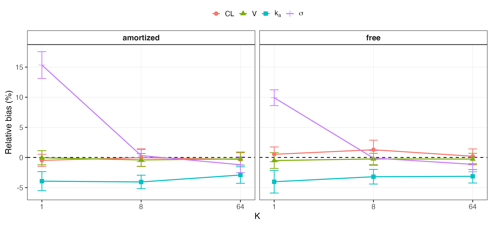
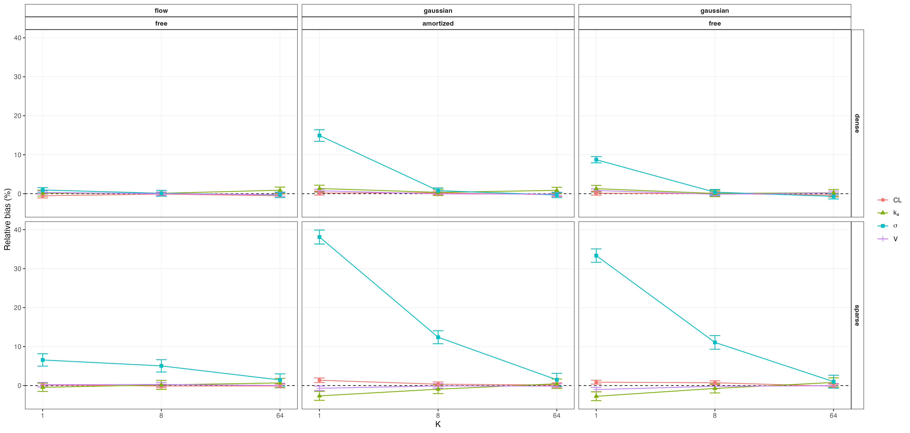

Importance-Weighted Variational Inference for Nonlinear Mixed-Effects Models: Characterizing and Correcting Bias in Between-Subject Variability
Abstract
Nonlinear mixed-effects (NLME) models are widely used to characterize population-level effects and between-subject variability in pharmacokinetic and pharmacodynamic data. Established estimation methods such as first-order conditional estimation with interaction (FOCEI) and stochastic approximation expectation-maximization (SAEM) can become computationally demanding as population size and model complexity increase. Variational inference (VI) offers an optimization-based alternative, including amortized formulations that reuse a shared inference model across subjects and datasets. Across simulated and real data, we show that the standard evidence lower bound (ELBO; \(K=1\)) systematically underestimates between-subject variability, whereas the importance-weighted ELBO (IW-ELBO; \(K>1\)) and richer variational families substantially reduce this bias. In matched simulated data, VI at \(K=64\) recovers fixed effects and between-subject variability with accuracy comparable to FOCEI and SAEM, with bias below 1.2% for every reported random-effect standard deviation, whereas \(K=1\) reproduces the systematic underestimation observed throughout the study. The same pattern is observed in two independent real pharmacokinetic datasets (theophylline and warfarin). In a nonlinear Michaelis-Menten elimination model, the correction persists for identifiable random effects, while exploratory analyses reveal a cross-method identifiability limitation when variability is assigned simultaneously to both Michaelis-Menten parameters. We further show that likelihood-ratio tests based on recovered marginal likelihoods are not uniformly calibrated across posterior architectures: tests that alter the random-effect structure are miscalibrated under a per-subject free posterior but substantially improved under a shared amortized posterior. Finally, importance-sampling effective sample size distinguishes well-converged from deliberately under-trained fits without requiring ground truth. These results delineate when corrected VI provides accurate NLME estimation and identify settings in which posterior architecture or downstream inference requires additional safeguards.
Introduction
Nonlinear mixed-effects (NLME) models are widely used to characterize population-level trends and between-subject variability in pharmacokinetic, pharmacodynamic, and related longitudinal data. They are particularly useful when repeated observations are collected from heterogeneous populations. Fitting an NLME model requires integrating over subject-specific random effects, an integral that is generally unavailable in closed form (Pinheiro 1994). Established estimation methods therefore rely on approximations. First-order conditional estimation with interaction (FOCEI) (Beal and Sheiner 1980; Wang 2008) linearizes the model around each subject’s conditional mode, whereas stochastic approximation expectation-maximization (SAEM) (Kuhn and Lavielle 2005) uses stochastic sampling within an iterative optimization scheme.
Variational inference (VI) approaches the same integration problem through optimization. A tractable approximate posterior is fit by maximizing a lower bound on the marginal likelihood, the evidence lower bound (ELBO). Recent work has extended this framework to amortized* VI for NLME models, in which a shared neural encoder maps a subject’s data to subject-specific posterior parameters (Arruda et al. 2024). Once trained, the encoder can be reused across subjects and potentially across related datasets, making amortized inference attractive in settings where repeated fitting is required.
A central limitation of the standard ELBO is that an imperfect variational approximation can produce a loose bound and distorted posterior uncertainty. Recent applications of VI to NLME models have noted underestimation of variability parameters (Tarek and Afonso 2026; Li et al. 2026; Baaz, Sjöberg, and Jirstrand 2026), but the phenomenon has not been systematically characterized across sampling designs, posterior architectures, and variational families. In NLME models, this issue is especially important because between-subject variability is often scientifically consequential and can influence downstream decisions such as covariate modeling and random-effect selection. It is therefore necessary to determine not only whether the bias occurs, but also whether it can be corrected and whether corrected point estimates are sufficient for downstream likelihood-based inference.
In this work, we systematically characterize the dependence of between-subject variability estimates on the number of importance samples, \(K\), under the standard ELBO (\(K=1\)) and IW-ELBO (\(K>1\)). We examine dense and sparse sampling designs, free and amortized posterior architectures, and Gaussian and normalizing-flow variational families. We benchmark corrected VI against FOCEI and SAEM on matched simulated datasets, test whether the same pattern reproduces in two real pharmacokinetic datasets, and extend the analysis to a nonlinear Michaelis-Menten elimination model. We further evaluate importance-sampling effective sample size as a practical diagnostic of fit quality and assess whether recovered marginal likelihoods support calibrated likelihood-ratio testing for changes in random-effect structure. Together, these experiments identify where VI provides reliable NLME estimation, where importance weighting materially improves accuracy, and where posterior architecture remains important for downstream inference.
Methods
NLME Model and the Variational Inference Objective
For a population of \(N\) subjects, each subject \(i\) contributes observations \(y_{ij}\) at times \(t_{ij}\), \(j = 1, \ldots, n_i\), generated by a structural model \(f\) evaluated at subject-specific parameters \(\phi_i\) as in Equation 1:
\[ y_{ij} = f(t_{ij}, \phi_i) \cdot \exp(\epsilon_{ij}), \qquad \epsilon_{ij} \sim \mathcal{N}(0, \sigma^2), \tag{1}\]
a log-normal (multiplicative) residual error model, equivalently additive on the log scale (Equation 2):
\[ \log y_{ij} = \log f(t_{ij}, \phi_i) + \epsilon_{ij}. \tag{2}\]
Subject-specific parameters are linked to population-level fixed effects \(\theta\) and subject-specific random effects \(\eta_i\) through a log-normal population model (Equation 3),
\[ \phi_i = \theta \odot \exp(\eta_i), \qquad \eta_i \sim \mathcal{N}(0, \Omega), \tag{3}\]
with \(\Omega\) diagonal (independent random effects) throughout this work. We parameterize the diagonal covariance matrix in terms of random-effect standard deviations,
\[ \Omega = \operatorname{diag}(\omega_1^2, \ldots, \omega_p^2), \]
where \(\omega_j\) denotes the between-subject standard deviation for random effect \(j\). Accordingly, reported quantities such as \(\omega_{CL}\), \(\omega_V\), and \(\omega_{k_a}\) are standard deviations rather than variances. In prose, we use between-subject variability* (BSV) when referring to this variability conceptually and reserve \(\Omega\) for the covariance matrix.
The population-level likelihood contribution of subject \(i\) requires integrating the random effects out of the joint density (Equation 4),
\[ p(y_i \mid \theta, \Omega, \sigma^2) = \int p(y_i \mid \phi_i, \sigma^2) \, p(\eta_i \mid \Omega) \, d\eta_i, \tag{4}\]
an integral with no closed form for any structural model \(f\) beyond the simplest linear cases, and the central computational obstacle every NLME estimation method must address.
Variational inference replaces this integral with an optimization problem. For a tractable variational family \(q_\lambda(\eta_i)\), the standard evidence lower bound (ELBO) satisfies Equation 5:
\[ \log p(y_i \mid \theta, \Omega, \sigma^2) \;\geq\; \mathbb{E}_{\eta_i \sim q_\lambda(\eta_i)} \Big[ \log p(y_i \mid \eta_i, \theta, \sigma^2) + \log p(\eta_i \mid \Omega) - \log q_\lambda(\eta_i) \Big] \;=:\; \mathrm{ELBO}_i(\lambda), \tag{5}\]
and population parameters are estimated by maximizing \(\sum_i \mathrm{ELBO}_i(\lambda_i)\) jointly over the variational parameters \(\lambda_i\) and \((\theta, \Omega, \sigma^2)\). Because this bound need not be tight, we additionally use the \(K\)-sample importance-weighted ELBO (IW-ELBO) (Burda, Grosse, and Salakhutdinov 2016), defined in Equation 6:
\[ \mathrm{ELBO}_i^{(K)}(\lambda) = \mathbb{E}_{\eta_i^{(1)}, \ldots, \eta_i^{(K)} \overset{\text{iid}}{\sim} q_\lambda(\eta_i)} \left[ \log \frac{1}{K}\sum_{k=1}^{K} \frac{p(y_i, \eta_i^{(k)} \mid \theta, \Omega, \sigma^2)} {q_\lambda(\eta_i^{(k)})} \right], \tag{6}\]
which is provably a tighter lower bound for larger \(K\) and converges to the true marginal log-likelihood as \(K \to \infty\); \(K=1\) recovers the standard ELBO exactly. We fit models at \(K \in \{1, 8, 64\}\) throughout, treating \(K=1\) as the baseline against which the importance-weighting correction is measured. A post-hoc, higher-precision importance-sampling estimate of the marginal likelihood (independent of the training \(K\)) is also used to place fitted models on the same objective-function-value (OFV) scale conventionally reported by FOCEI/SAEM software, \(\mathrm{OFV} = -2 \log p(y \mid \theta, \Omega, \sigma^2)\).
Variational Posterior Families
We cross two independent design choices for the variational posterior.
Free vs. amortized. A free* posterior assigns each subject \(i\) its own variational parameters \(\lambda_i = (\mu_i, s_i)\), optimized independently subject by subject. An amortized* posterior instead learns a single shared encoder \(\lambda_i = g_\psi(y_i)\) mapping any subject’s observed data directly to variational parameters, so that inference for a new subject requires only a forward pass through \(g_\psi\) rather than a fresh per-subject optimization, the property that makes amortized VI attractive for reuse across new datasets (Arruda et al. 2024).
Gaussian vs. normalizing flow. Within either posterior architecture, the variational family itself may be a simple diagonal Gaussian, \(q(\eta_i) = \mathcal{N}(\mu_i, \mathrm{diag}(s_i^2))\), or a richer family constructed via a conditional normalizing flow (Rezende and Mohamed 2015; Papamakarios et al. 2021). In the flow case, a latent variable \(z_i \sim \mathcal{N}(0, I)\) is transformed by an invertible, differentiable map \(h_\psi\) conditioned on the base posterior’s parameters (Equation 7),
\[ \eta_i = h_\psi(z_i \,;\, \mu_i, s_i), \qquad \log q(\eta_i) = \log \mathcal{N}(z_i; 0, I) - \log \left| \det \frac{\partial h_\psi}{\partial z_i} \right|, \tag{7}\]
allowing \(q\) to represent non-Gaussian posterior shapes (skew, multimodality) that a diagonal Gaussian cannot. Crossing both design axes gives four posterior configurations (free/amortized \(\times\) Gaussian/flow); as detailed in the Results, one configuration (amortized + flow) is unstable and excluded from primary results.
Training and Convergence
All models are trained via stochastic gradient ascent on \(\mathrm{ELBO}^{(K)}\) using Adam, with training continued adaptively until the estimated random-effect standard deviations \(\omega\) themselves plateau (rather than a fixed step count or loss-based stopping rule, which we found could converge in loss while the \(\omega\) estimates were still drifting), subject to a safety cap. The best-performing checkpoint by training objective is retained regardless of where training terminates, guarding against a fit wandering into and remaining in a poor basin late in training.
Simulation Study Design
Linear tier. A one-compartment oral pharmacokinetic model with first-order absorption and elimination (analytic solution, no numerical integration required) is used as the primary simulated test bed, with population parameters drawn from typical published ranges (clearance \(CL\), volume \(V\), absorption rate \(k_a\), each with independent between-subject variability, and multiplicative residual standard deviation \(\sigma\)). Two sampling designs are compared at matched \(K\): a dense design with six observation times per subject, and a sparse design with fewer, more widely spaced observations, to test whether the standard-ELBO bias interacts with the identifiability of the sampling schedule itself.
Nonlinear tier. A one-compartment intravenous bolus model with saturable, Michaelis-Menten elimination (Equation 8),
\[ \frac{dA}{dt} = -\frac{V_{\max} \cdot (A/V)}{K_m + (A/V)}, \qquad A(0) = \mathrm{Dose}, \tag{8}\]
has no closed-form solution and is integrated numerically (fixed-step RK4) at every training step, providing a genuinely nonlinear test of whether the standard-ELBO bias and its correction survive outside the analytically convenient linear case. Between-subject variability is placed on \(V_{\max}\) and \(V\) only, with \(K_m\) estimated as a fixed effect without a random effect, both because placing independent between-subject variability on both Michaelis-Menten parameters simultaneously is a recognized cross-method identifiability difficulty in nonlinear mixed-effects modeling of saturable kinetics, not specific to variational inference, and because this was directly confirmed empirically in preliminary analyses (see Results). The dosing and sampling design (dose and an observation window spanning approximately 60 hours) was chosen specifically to ensure the simulated concentration trajectory crosses from the fully saturated regime into the first-order elimination regime within the observation window; simulation confirmed that a substantially shorter window remains entirely within the saturated regime, in which the Michaelis-Menten equation is structurally insensitive to \(K_m\), and does not permit identification of \(K_m\)’s population value at all, independent of any variational-inference consideration.
Design consistency. Throughout, a single random seed generates one simulated dataset per replicate, and every estimation-method arm being compared (posterior architecture, family, \(K\)) is fit to the identical dataset, so that differences between arms reflect only the estimation method and not sampling variability in the simulated data.
Real-Data Validation
Two independent, publicly available pharmacokinetic datasets are used to test whether the simulation-derived findings reproduce on real data, where, unlike simulation, no ground truth is available and the signature to look for is instead internal consistency: whether \(K=1\) under-reports the random-effect standard deviations \(\omega\) relative to \(K=64\) on the identical dataset, and whether fixed-effect estimates are externally plausible.
Theophylline. The Boeckmann/Sheiner/Beal theophylline dataset (Boeckmann, Sheiner, and Beal 1994) (\(N=12\) subjects, oral dosing) is loaded programmatically rather than transcribed by hand.
Warfarin. The classical warfarin pharmacokinetic/pharmacodynamic dataset (O’Reilly and Aggeler 1968) (\(N=33\) subjects, single oral dose) is used, restricted to its pharmacokinetic (plasma concentration) endpoint; the dataset also contains a pharmacodynamic (prothrombin complex activity) endpoint not modeled here. Fitted fixed effects are compared directly against an independently published FOCEI fit of this dataset using the nlmixr2 software package (Fidler et al. 2019), which uses a more detailed two-step transit-compartment absorption structure than the simple first-order absorption model used here.
Diagnostics: Importance-Sampling Effective Sample Size
Because no ground truth is available on real data, we additionally characterize a diagnostic derived from the post-hoc importance-sampling marginal-likelihood estimate: the effective sample size (ESS) of the importance weights, which should be low when the variational posterior is a poor approximation to the true posterior (as when a fit is under-trained) and high when it is a good approximation. This diagnostic is validated by deliberately comparing well-converged and deliberately under-trained fits on identical simulated data and testing whether ESS separates the two groups.
Likelihood-Ratio Test Calibration
To test whether the marginal likelihood recovered via importance sampling is valid for likelihood-ratio-based model comparison, we simulate data under a null hypothesis in which one random effect’s variance is exactly zero, fit both a reduced model (without that random effect) and a full model (with it) to the identical simulated data, and compare the empirical distribution of Equation 9,
\[ \Delta\mathrm{OFV} = \mathrm{OFV}_{\text{reduced}} - \mathrm{OFV}_{\text{full}} \tag{9}\]
against its correct theoretical reference distribution. Testing a variance component against the boundary of its parameter space (\(\mathrm{Var} \geq 0\)) is a non-regular testing problem: under the null, the boundary constraint means the reduced model’s likelihood exceeds the full model’s roughly half the time by chance alone, and the correct asymptotic reference distribution is not \(\chi^2_1\) but the Self-Liang boundary mixture (Self and Liang 1987) in Equation 10:
\[ \Delta\mathrm{OFV} \;\big|\; H_0 \;\sim\; \tfrac{1}{2}\,\delta_0 \;+\; \tfrac{1}{2}\,\chi^2_1, \tag{10}\]
a 50:50 mixture of a point mass at zero and a standard \(\chi^2\) random variable with one degree of freedom. Calibrating against the naive \(\chi^2_1\) reference instead would produce a silently underpowered test (the naive test’s nominal 5% type-I error rate corresponds to only 2.5% under the true mixture reference); we calibrate against the correct mixture throughout, evaluating both the fraction of null replicates landing at the boundary (expected \(\approx 50\%\)) and, for the strictly-positive replicates, a Kolmogorov-Smirnov test against \(\chi^2_1\).
Comparison to Established Estimation Methods
FOCEI and SAEM baseline fits are obtained via the nlmixr2 R package (Fidler et al. 2019), using a structural model and log-normal residual error model matched exactly to the VI implementation’s OneCmtOral: identical parameterization (\(\log CL = \theta_{CL} +
\eta_{CL}\), and analogously for \(V\) and \(k_a\)), and the same off-truth initial values used throughout this work for both estimation approaches, so that neither starts closer to the truth than the other. The comparison uses \(N=120\) subjects and 20 replicate simulated datasets, matching the scale used for the linear-tier simulation study above; each replicate is fit once by FOCEI, once by SAEM, and by variational inference at \(K=1\) and \(K=64\), all on the identical simulated dataset. Runtime is measured as process CPU time, not wall-clock time, for both the variational inference fits (Python’s time.process_time()) and the FOCEI/SAEM fits (R’s proc.time(), summing the user and system components), consistent throughout this work specifically because process CPU time is immune to operating-system sleep and largely immune to contention from other processes, unlike wall-clock time. Thread counts were not explicitly pinned to be identical between the PyTorch and R/BLAS processes; this is a limitation of the runtime comparison reported below (see Limitations), since incidental differences in parallelism could confound a small part of the observed speed difference.
This runtime comparison is scoped deliberately to a single, simple, analytically tractable structural model, chosen specifically to allow a fair, matched comparison in which both sides evaluate the likelihood via a closed-form solution rather than numerical integration. It is not intended as the paper’s primary evidence for variational inference’s practical efficiency advantage, which is expected to be most pronounced for larger populations and structurally more complex models where FOCEI and SAEM’s per-iteration cost scales unfavorably, an advantage already established in the literature at larger scale (Arruda et al. (2024) report roughly two orders of magnitude speedup on their tested models). The purpose of the comparison reported here is narrower: to verify that the BSV-bias correction characterized throughout this work brings variational inference to FOCEI/SAEM-comparable accuracy without introducing a prohibitive runtime cost on a tractable model, not to make a general efficiency claim.
Software and Computational Environment
All variational inference models are implemented in PyTorch (Paszke et al. 2019). FOCEI and SAEM baseline fits use the nlmixr2 R package (Fidler et al. 2019) (version 7.0.1, with nlmixr2est 7.0.2 and rxode2 5.1.6) under R version 4.5.3 (aarch64-apple-darwin20) on macOS.
Results
Standard-ELBO Variational Inference Underestimates Between-Subject Variability
On the linear one-compartment model with known ground truth, standard-ELBO (\(K=1\)) fitting systematically underestimates between-subject variability under both free and amortized posteriors, with the bias substantially reduced by importance weighting at larger \(K\) (Figure 1 and Table S1). Structural fixed effects show much less dependence on \(K\). Clearance and volume remain comparatively stable, whereas \(k_a\) is consistently underestimated by a similar amount across \(K\), indicating a persistent bias that is distinct from the strongly \(K\)-dependent behavior of the random-effect parameters. Residual-error estimates show greater \(K\)-dependence in some settings, consistent with partial compensation between residual and between-subject variability (Table S1; Figure S1).

Sparse Sampling Designs and Richer Variational Families
Sparse sampling designs roughly double the standard-ELBO bias relative to dense sampling at matched \(K\), consistent with the mechanism being one of identifiability: whichever random effect the sampling design least constrains shrinks the most under standard-ELBO training. Independently, a richer variational family (normalizing flow) closes most of the gap that importance-weighting alone leaves at low \(K\), with the free posterior under the flow family showing negligible bias even at \(K=1\) in the dense design (Figure 2 and Table S2 and Table S3). Structural fixed-effect estimates are substantially less sensitive to \(K\) across the same grid, whereas residual-error estimates show greater dependence on \(K\) in some panels, consistent with redistribution of unexplained variability between residual error and between-subject random effects (Table S2 and Table S3; Figure S2).

One posterior configuration, amortized posterior combined with the normalizing-flow family, is unstable across every tested value of \(K\) and is excluded from the results above. Rather than a \(K=1\)-specific problem, this combination shows a comparable rate of flagged, substantially divergent fits at \(K=1\), \(K=8\), and \(K=64\) alike; higher \(K\) changes the character of the failure (from occasional gross divergence to more consistent convergence onto a stable but incorrect estimate) without reducing its frequency. We attribute this to the amortized encoder’s output serving a double role under this configuration, simultaneously defining the flow’s base distribution and its conditioning input, creating a moving optimization target not present when either the posterior is not amortized or the family is not a flow. A preliminary architectural variant decoupling these two roles, following the design used by Arruda et al. (2024), is discussed as future work in the Discussion.
Nonlinear Elimination Kinetics
Extending to the Michaelis-Menten elimination model, an initial attempt to place between-subject variability on both \(V_{\max}\) and \(K_m\) simultaneously showed severe, stable bias in \(\omega_{K_m}\) (on the order of \(-80\%\) to \(-90\%\)) that did not improve with additional training steps or a redesigned sampling window, while \(\omega_{V_{\max}}\)’s bias remained modest throughout, a pattern consistent with a genuine structural identifiability limitation of estimating variability on both Michaelis-Menten parameters simultaneously, a difficulty recognized in standard pharmacometric practice for saturable-kinetics models and not specific to variational inference. Restricting between-subject variability to \(V_{\max}\) and \(V\) only, with \(K_m\) retained as a population-level fixed effect, resolves this: fixed effects recover cleanly, and the same \(K=1\)-to-\(K=64\) shrinkage-and-correction signature seen in the linear tier reproduces on \(\omega_V\); \(\omega_{V_{\max}}\)’s bias is small and essentially flat across \(K\) in this design, with little shrinkage at \(K=1\) to correct (Figure 3 and Table S4).

We additionally tested the amortized posterior on this same nonlinear model and found a distinct, substantial instability, not the amortized-flow instability described above, since no flow is involved, with bias in the random-effect standard deviations increasing rather than decreasing with \(K\) and a non-trivial fraction of fits failing to converge within the training budget. Results using the amortized posterior on this model are excluded from the table and figure above and discussed further, with a working hypothesis, in the Discussion below.
Real-Data Validation
Both real pharmacokinetic datasets reproduce the standard-ELBO shrinkage signature identified in simulation: \(K=1\) reports smaller random-effect standard deviations than \(K=64\) on the identical dataset, with the clearance random effect showing the least shrinkage of the three, consistent with clearance being the most robustly identified parameter throughout the simulated results above (Figure 4 and Table S5). On warfarin, fixed-effect estimates for clearance and volume of distribution fall inside the published 95% confidence intervals of an independently fitted FOCEI model on the same data (Fidler et al. 2019) despite this work’s simpler one-compartment, single-step absorption structure versus the published model’s two-step transit-compartment absorption, a real, external agreement on the parameters that should agree given the shared elimination structure, not merely a directional match.

Diagnosing Fit Quality via Effective Sample Size
Mean importance-sampling effective sample size cleanly separates deliberately under-trained fits from well-converged fits on matched simulated data (Figure 5 and Table S6), supporting its use as a practical diagnostic on real data where no ground truth is available to check convergence directly. A fixed per-subject tail-count threshold does not separate the two groups as cleanly, reflecting genuine subject-to-subject variation in fit difficulty independent of overall training adequacy; we therefore recommend the aggregate (mean or median) ESS as the primary diagnostic, not a fixed per-subject threshold.

Validity of the Recovered Likelihood for Model Selection
Likelihood-ratio tests built on the free posterior’s recovered marginal likelihood were miscalibrated against the correct Self-Liang boundary mixture reference for testing whether a random effect’s variance is zero (Figure 6). Under the free posterior, only 25% of 100 null replicates fell within the prespecified boundary region, compared with the approximately 50% expected under the theoretical mixture; 22 replicates produced negative \(\Delta\mathrm{OFV}\) values. Among the strictly positive replicates, the distribution also deviated from \(\chi^2_1\) (Kolmogorov-Smirnov \(D=0.2922\), \(p<0.0001\)), although the empirical type-I error using the correct boundary-mixture cutoff was 6%, close to the nominal 5% level. The complete numerical calibration summary is provided in Table S7.
This miscalibration was not explained by insufficient post-hoc importance-sampling precision: increasing the post-hoc evaluation sample size fivefold left the calibration essentially unchanged, including a highly discrepant replicate whose \(\Delta\mathrm{OFV}\) value remained nearly unchanged. Switching to an amortized posterior substantially improved the boundary-mass component of the calibration, reproducibly at two independent replicate counts, although a smaller residual deviation in the shape of the non-boundary distribution remained. We attribute the free posterior’s miscalibration to an effective-degrees-of-freedom mismatch: the more-complex model receives an additional free variational parameter pair for every subject, far exceeding the single population-level variance parameter nominally being tested. Classical asymptotic theory, including the Self-Liang boundary-mixture reference, does not account for this per-subject asymmetry; a shared amortized encoder does not introduce the same increase in subject-specific variational parameters.

This finding is scoped specifically to likelihood-ratio comparisons that change the number of random effects; it does not affect the BSV-bias correction findings reported above, which never depended on nested-model comparison.
Comparison to Established Estimation Methods
On matched simulated data (\(N=120\) subjects, 20 replicates), FOCEI, SAEM, and variational inference at \(K=64\) recover both fixed effects and the random-effect standard deviations with closely comparable accuracy, while \(K=1\) reproduces the same systematic underestimation of the random-effect standard deviations established throughout the linear-tier results above (Table 1). Fixed-effect bias is small for every method (under 2.1% in magnitude across \(CL\), \(V\), and \(k_a\) for FOCEI, SAEM, and both VI arms alike), showing that structural fixed effects were comparatively well recovered in this matched benchmark. For the random-effect standard deviations, FOCEI and SAEM show bias no larger than 3.6% on any parameter (\(\omega_{k_a}\): \(-3.6\%\) and \(-1.25\%\) respectively); VI at \(K=64\) matches this closely, with bias under 1.2% on every \(\omega\) parameter (\(\omega_{CL}\): \(-0.30\%\), \(\omega_V\): \(+1.15\%\), \(\omega_{k_a}\): \(-1.18\%\)). VI at \(K=1\), by contrast, shows the characteristic pattern identified throughout this work: \(\omega_V\) and \(\omega_{k_a}\) biased by \(-14.3\%\) and \(-21.9\%\) respectively, an order of magnitude larger than FOCEI, SAEM, or VI at \(K=64\) on the same parameters. A parallel pattern holds for the residual-error parameter \(\sigma\): FOCEI, SAEM, and VI at \(K=64\) all recover \(\sigma\) within 2% of its true value, while VI at \(K=1\) overestimates it by 7.4%.
| Parameter | Truth | FOCEI | SAEM | VI, K = 1 | VI, K = 64 |
|---|---|---|---|---|---|
| \(CL\) | 3 | 3 | 2.98 | 3 | 2.94 |
| \(V\) | 30 | 30.3 | 30.1 | 30.5 | 30.4 |
| \(k_a\) | 1.2 | 1.18 | 1.19 | 1.21 | 1.18 |
| \(\omega_{CL}\) | 0.3 | 0.296 | 0.298 | 0.293 | 0.299 |
| \(\omega_V\) | 0.2 | 0.204 | 0.203 | 0.172 | 0.202 |
| \(\omega_{k_a}\) | 0.4 | 0.389 | 0.395 | 0.313 | 0.395 |
| \(\sigma\) | 0.2 | 0.196 | 0.196 | 0.215 | 0.197 |
| Median runtime (s) | 11.1 | 12.6 | 4.94 | 17.7 |
Mean process CPU time, both sides now evaluating the model via a closed-form analytic solution, was 11.25s for FOCEI, 12.68s for SAEM, 5.14s for VI at \(K=1\), and 16.50s for VI at \(K=64\). At \(K=1\), variational inference is modestly faster than both established methods (2.2x versus FOCEI, 2.5x versus SAEM). At \(K=64\), this reverses: VI is slower than both (FOCEI is roughly 1.5x faster, SAEM roughly 1.3x faster), reflecting the direct computational cost of the importance-weighting correction itself. This asymmetry is precisely the point made in the Methods scoping paragraph above: on this simple, analytically tractable model, correcting the \(K=1\) bias to FOCEI/SAEM-comparable accuracy is not free, and the net runtime effect depends on \(K\), not a uniform variational-inference advantage. This result should not be read as evidence against variational inference’s practical value, which this work’s broader case rests on accuracy (see above) together with runtime advantages already established in the literature for larger, structurally more complex models (Arruda et al. (2024)); it is evidence that, for models simple enough to admit a closed-form solution, the runtime case for variational inference is genuinely mixed rather than uniformly favorable. Thread counts were not explicitly pinned to be equal between the PyTorch and R/BLAS processes; see Limitations.
Discussion
Across simulated and real data, we observed a consistent dependence of between-subject variability estimates on the tightness of the variational objective. Under the standard ELBO (\(K=1\)), random-effect variability was systematically underestimated, whereas larger \(K\) under the IW-ELBO substantially reduced this bias. The same pattern was observed in both free and amortized posterior architectures, across dense and sparse sampling designs, and in a nonlinear model requiring numerical integration. Direct comparison on matched simulated datasets further showed that VI at \(K=64\) recovered fixed effects and between-subject variability with accuracy comparable to FOCEI and SAEM. Thus, the improvement at larger \(K\) is not merely an internal change within VI; it brings the resulting point estimates close to those from established NLME estimators under the conditions studied here.
The companion fixed-effect analyses clarify the specificity of this result. Structural fixed effects were generally much less sensitive to \(K\) than the random-effect parameters. In Phase 0, \(k_a\) remained consistently underestimated across all tested values of \(K\), suggesting a persistent estimation or information limitation distinct from the \(K\)-dependent variability bias. Residual-error estimates were more sensitive to \(K\) in some settings and tended to improve as between-subject variability increased toward its generating value. This pattern is consistent with partial compensation between residual and between-subject variability: when random-effect variability is underestimated, some unexplained variation can be absorbed by the residual-error term. The principal effect of increasing \(K\) is therefore better described as improved allocation and recovery of variability rather than a general correction of all parameter bias.
The results also show that posterior architecture and variational family cannot be treated as interchangeable implementation details. Free-posterior normalizing flows substantially reduce variability bias even at low \(K\) in well-identified designs. In contrast, the amortized-flow configuration tested here was unstable across all values of \(K\). A plausible explanation is that the amortized encoder output serves two roles simultaneously in this architecture: it parameterizes the flow’s base distribution and also conditions the flow transformation, creating a moving optimization target. The amortized-flow architecture of Arruda et al. (2024) avoids this coupling by using a fixed standard-normal base distribution and reserving encoder-derived summaries for conditioning. A preliminary decoupled implementation following that design produced plausible estimates in a small-scale test, but it has not yet been evaluated at the scale required for inclusion as a formal result.
A distinct instability was observed when the amortized Gaussian posterior was applied to the nonlinear Michaelis-Menten model. Because no flow was involved, this behavior cannot be explained by the same base-distribution coupling. One possibility is that a single shared encoder is more difficult to train when subject trajectories span qualitatively different dynamical regimes, including saturated, transitional, and approximately first-order elimination. This interpretation remains speculative and requires dedicated investigation.
The nonlinear analysis also highlighted an identifiability issue that should be distinguished from VI-specific approximation error. Allowing independent between-subject variability on both \(V_{\max}\) and \(K_m\) produced severe and persistent bias in the variability associated with \(K_m\), even after extending training and redesigning the sampling window. Restricting between-subject variability to \(V_{\max}\) and \(V\), while retaining \(K_m\) as a fixed effect, resolved the most severe instability. This behavior is consistent with the known correlation and identifiability challenges associated with simultaneous estimation of Michaelis-Menten parameters in saturable systems. A direct FOCEI/SAEM comparison on the same nonlinear model would provide a stronger cross-method confirmation of this interpretation.
The likelihood-ratio calibration experiments show that accurate point estimates do not guarantee valid downstream likelihood-based inference. When nested models differed in random-effect structure, the free posterior produced substantially too little boundary mass relative to the Self-Liang reference distribution. Increasing the precision of the post-hoc importance-sampling evaluation did not resolve the discrepancy, arguing against finite-sample importance-sampling noise as the primary explanation. In contrast, the amortized posterior substantially restored the expected boundary behavior. The effective-degrees-of-freedom interpretation provides a plausible explanation: adding a random effect under a free posterior introduces additional subject-specific variational parameters for every subject, whereas the classical likelihood-ratio reference accounts only for the population-level parameter being tested. The shared amortized encoder does not introduce the same per-subject asymmetry. A smaller residual deviation in the positive part of the null distribution remains unexplained.
The real-data analyses provide an important complement to the simulations. Both theophylline and warfarin showed smaller random-effect variability estimates at \(K=1\) than at \(K=64\) on the same data, reproducing the direction of the simulation result without access to ground truth. On warfarin, clearance and volume estimates were also compatible with published FOCEI confidence intervals despite differences in structural absorption models. These findings support the relevance of the simulation-derived pattern to practical pharmacokinetic analyses, while the small size of the theophylline dataset also emphasizes that residual high-\(K\) variability bias may reflect classical small-sample estimation effects in addition to variational approximation error.
The direct runtime comparison should be interpreted narrowly. On the simple analytic one-compartment model used for the benchmark, VI at \(K=1\) was faster than FOCEI and SAEM, whereas VI at \(K=64\) was slower because of the direct computational cost of importance weighting. This result does not support a uniform speed advantage for corrected VI on simple models. Rather, it shows that improved accuracy at larger \(K\) carries a measurable computational cost. Potential efficiency advantages are more likely to emerge for larger populations, repeated inference, amortized workflows, or structurally complex models, consistent with prior work (Arruda et al. 2024).
Limitations and Future Directions
Several limitations should be considered. First, thread counts were not explicitly matched between PyTorch and R/BLAS processes in the runtime benchmark, so differences in incidental parallelism may contribute to the observed timing differences. Second, the FOCEI/SAEM comparison was performed only for the linear model. Extending the benchmark to the Michaelis-Menten model would strengthen the interpretation of the nonlinear identifiability results. Third, this study evaluates one linear and one nonlinear structural model; generalization to multicomponent models, correlated random effects, covariate models, time-varying dosing, and other residual-error structures remains to be established. Fourth, the smaller residual miscalibration in the positive component of the amortized-posterior likelihood-ratio test remains unexplained.
Future work should therefore focus on production-scale evaluation of the decoupled amortized-flow architecture, direct FOCEI/SAEM benchmarking on nonlinear models, explicit control of computational parallelism in runtime comparisons, and extension to more complex NLME structures. Because numerical integration dominated the cost of the nonlinear experiments, evaluating differentiable, purpose-built ODE solvers such as DifferentialEquations.jl (Rackauckas and Nie 2017), as used by Arruda et al. (2024) for more structurally complex models, may also be worthwhile provided that solver changes do not alter the statistical comparison being made.
References
Supplementary Material
Supplementary Figures


Supplementary Tables
| Posterior | Parameter type | Parameter | \(K=1\) | \(K=8\) | \(K=64\) |
|---|---|---|---|---|---|
| amortized | Structural fixed effect | \(CL\) | -0.484 (2.85) | -0.0361 (4.16) | -0.321 (3.49) |
| amortized | Structural fixed effect | \(V\) | -0.0532 (3.32) | -0.412 (2.99) | -0.241 (2.89) |
| amortized | Structural fixed effect | \(k_a\) | -3.94 (4.48) | -4.07 (3.17) | -2.92 (3.89) |
| amortized | Residual variability | \(\sigma\) | 15.3 (6.29) | 0.315 (2.85) | -1.21 (3.72) |
| amortized | BSV SD | \(\omega_{CL}\) | -0.712 (5.91) | 0.17 (7.51) | -0.329 (7.05) |
| amortized | BSV SD | \(\omega_V\) | -47.8 (39.6) | -16.5 (14.1) | -9.67 (13.4) |
| amortized | BSV SD | \(\omega_{k_a}\) | -13.5 (35.8) | -5.79 (16.9) | -2.61 (13.7) |
| free | Structural fixed effect | \(CL\) | 0.524 (3.45) | 1.28 (4.49) | 0.198 (3.44) |
| free | Structural fixed effect | \(V\) | -0.508 (3.69) | -0.249 (2.66) | -0.267 (2.71) |
| free | Structural fixed effect | \(k_a\) | -4.03 (5.3) | -3.2 (3.43) | -3.13 (3.15) |
| free | Residual variability | \(\sigma\) | 9.92 (3.71) | -0.099 (3.46) | -1.15 (3.49) |
| free | BSV SD | \(\omega_{CL}\) | -1.67 (6.34) | 0.248 (7.49) | 0.415 (7.43) |
| free | BSV SD | \(\omega_V\) | -47.4 (42) | -16.4 (13.6) | -9 (12.2) |
| free | BSV SD | \(\omega_{k_a}\) | -8.91 (33.7) | -6.75 (16.4) | -2.03 (12.1) |
| Posterior | Variational family | Parameter type | Parameter | \(K=1\) | \(K=8\) | \(K=64\) |
|---|---|---|---|---|---|---|
| amortized | Gaussian | Structural fixed effect | \(CL\) | 0.171 (2.81) | 0.237 (2.52) | -0.266 (2.55) |
| amortized | Gaussian | Structural fixed effect | \(V\) | 0.755 (2.15) | -0.0364 (2.32) | -0.111 (2.24) |
| amortized | Gaussian | Structural fixed effect | \(k_a\) | 1.34 (4.65) | 0.34 (4.44) | 0.864 (4.28) |
| amortized | Gaussian | Residual variability | \(\sigma\) | 14.9 (8.2) | 0.789 (3.8) | -0.32 (3.81) |
| amortized | Gaussian | BSV SD | \(\omega_{CL}\) | -2.14 (7.93) | -0.303 (6.76) | -0.102 (7.11) |
| amortized | Gaussian | BSV SD | \(\omega_V\) | -25.6 (29.3) | -6 (12.1) | -1.86 (10.4) |
| amortized | Gaussian | BSV SD | \(\omega_{k_a}\) | -17.3 (21.7) | -6.11 (9.63) | -2 (8.26) |
| free | Flow | Structural fixed effect | \(CL\) | -0.535 (3.04) | -0.0883 (2.44) | -0.524 (2.48) |
| free | Flow | Structural fixed effect | \(V\) | 0.311 (2.27) | 0.0194 (2.28) | -0.201 (2.5) |
| free | Flow | Structural fixed effect | \(k_a\) | 0.149 (4.16) | 0.101 (4.06) | 0.904 (4.39) |
| free | Flow | Residual variability | \(\sigma\) | 0.956 (3.31) | 0.114 (4.09) | -0.282 (3.8) |
| free | Flow | BSV SD | \(\omega_{CL}\) | -0.0845 (7.15) | -0.0688 (7.35) | 0.165 (6.99) |
| free | Flow | BSV SD | \(\omega_V\) | -1.02 (10.1) | -1.21 (10.3) | -0.58 (10.6) |
| free | Flow | BSV SD | \(\omega_{k_a}\) | -3 (8.77) | -1.52 (8.44) | -0.791 (8.27) |
| free | Gaussian | Structural fixed effect | \(CL\) | 0.133 (2.86) | 0.0176 (3.03) | -0.328 (2.9) |
| free | Gaussian | Structural fixed effect | \(V\) | 0.823 (2.28) | -0.144 (2.35) | 0.209 (2.62) |
| free | Gaussian | Structural fixed effect | \(k_a\) | 1.3 (4.63) | 0.0647 (4.59) | 0.243 (4.65) |
| free | Gaussian | Residual variability | \(\sigma\) | 8.73 (4.37) | 0.39 (3.83) | -0.678 (3.64) |
| free | Gaussian | BSV SD | \(\omega_{CL}\) | -1.04 (7.19) | 0.0186 (7.07) | -0.000424 (7.22) |
| free | Gaussian | BSV SD | \(\omega_V\) | -19.6 (23.2) | -5.67 (12) | -1.73 (11.1) |
| free | Gaussian | BSV SD | \(\omega_{k_a}\) | -16.9 (18) | -5.4 (9.62) | -0.961 (8.06) |
| Posterior | Variational family | Parameter type | Parameter | \(K=1\) | \(K=8\) | \(K=64\) |
|---|---|---|---|---|---|---|
| amortized | Gaussian | Structural fixed effect | \(CL\) | 1.37 (3.2) | 0.36 (3.16) | 0.145 (3.07) |
| amortized | Gaussian | Structural fixed effect | \(V\) | -0.693 (3.07) | -0.0815 (3.19) | -0.128 (3.29) |
| amortized | Gaussian | Structural fixed effect | \(k_a\) | -2.64 (6.22) | -0.922 (6.22) | 0.471 (6.57) |
| amortized | Gaussian | Residual variability | \(\sigma\) | 38.1 (9.86) | 12.4 (9.11) | 1.49 (9.08) |
| amortized | Gaussian | BSV SD | \(\omega_{CL}\) | -1.19 (8.63) | -2.1 (8.15) | -1.1 (7.57) |
| amortized | Gaussian | BSV SD | \(\omega_V\) | -81.9 (12.8) | -17.9 (24.7) | -2.83 (12.4) |
| amortized | Gaussian | BSV SD | \(\omega_{k_a}\) | -14.8 (26.9) | -25.1 (33) | -5.57 (22) |
| free | Flow | Structural fixed effect | \(CL\) | 0.161 (2.76) | -0.0955 (2.49) | -0.0965 (2.68) |
| free | Flow | Structural fixed effect | \(V\) | 0.237 (3.06) | 0.294 (2.88) | 0.0393 (3.11) |
| free | Flow | Structural fixed effect | \(k_a\) | -0.443 (5.85) | 0.181 (6.36) | 0.684 (6.39) |
| free | Flow | Residual variability | \(\sigma\) | 6.58 (8.71) | 5.06 (8.67) | 1.45 (8.57) |
| free | Flow | BSV SD | \(\omega_{CL}\) | -1.16 (7.51) | -0.899 (7.54) | -0.671 (7.63) |
| free | Flow | BSV SD | \(\omega_V\) | -0.926 (11) | -1.7 (12) | -0.019 (10.5) |
| free | Flow | BSV SD | \(\omega_{k_a}\) | -19.3 (20) | -18.1 (26.1) | -5.21 (20.9) |
| free | Gaussian | Structural fixed effect | \(CL\) | 0.88 (2.68) | 0.735 (2.72) | -0.16 (2.84) |
| free | Gaussian | Structural fixed effect | \(V\) | -1.02 (3.03) | -0.168 (3.37) | -0.0371 (3.16) |
| free | Gaussian | Structural fixed effect | \(k_a\) | -2.75 (6.18) | -0.723 (6.39) | 0.802 (6.44) |
| free | Gaussian | Residual variability | \(\sigma\) | 33.3 (9.43) | 11.1 (9.61) | 1.02 (9) |
| free | Gaussian | BSV SD | \(\omega_{CL}\) | 0.234 (7.83) | -1.71 (8.32) | -0.419 (7.39) |
| free | Gaussian | BSV SD | \(\omega_V\) | -83 (15.6) | -17.4 (26.4) | -2.65 (11.2) |
| free | Gaussian | BSV SD | \(\omega_{k_a}\) | -5.38 (26.7) | -24.3 (33.2) | -5.12 (21.3) |
| Parameter | Truth | \(K=1\) | \(K=8\) | \(K=64\) |
|---|---|---|---|---|
| \(K_m\) | 2 | 1.96 (-1.98%) | 1.98 (-1.2%) | 1.98 (-0.867%) |
| \(V\) | 30 | 30.1 (0.483%) | 30.1 (0.376%) | 30.3 (0.996%) |
| \(V_{\max}\) | 8 | 8.01 (0.134%) | 7.9 (-1.28%) | 7.89 (-1.42%) |
| \(\omega_V\) | 0.2 | 0.192 (-3.93%) | 0.198 (-1.07%) | 0.2 (0.137%) |
| \(\omega_{V_{\max}}\) | 0.3 | 0.301 (0.352%) | 0.3 (0.129%) | 0.299 (-0.207%) |
| \(\sigma\) | 0.2 | 0.201 (0.719%) | 0.198 (-1.06%) | 0.196 (-2.04%) |
| Dataset | Parameter | \(K=1\) | \(K=64\) | Difference (%) |
|---|---|---|---|---|
| theophylline | \(CL\) | 0.04 | 0.0403 | -0.882 |
| theophylline | \(V\) | 0.462 | 0.452 | 2.35 |
| theophylline | \(k_a\) | 1.29 | 1.34 | -4.27 |
| theophylline | \(\omega_{CL}\) | 0.245 | 0.255 | -3.81 |
| theophylline | \(\omega_V\) | 0.0921 | 0.113 | -18.2 |
| theophylline | \(\omega_{k_a}\) | 0.646 | 0.682 | -5.22 |
| theophylline | \(\sigma\) | 0.18 | 0.172 | 4.82 |
| warfarin | \(CL\) | 0.132 | 0.13 | 2.3 |
| warfarin | \(V\) | 7.94 | 8.02 | -1.01 |
| warfarin | \(k_a\) | 0.617 | 0.637 | -3.1 |
| warfarin | \(\omega_{CL}\) | 0.278 | 0.276 | 0.772 |
| warfarin | \(\omega_V\) | 0.19 | 0.207 | -8.6 |
| warfarin | \(\omega_{k_a}\) | 0.811 | 0.978 | -17 |
| warfarin | \(\sigma\) | 0.207 | 0.203 | 2.11 |
| Fit-quality arm | Mean | Median | Minimum | Maximum |
|---|---|---|---|---|
| bad | 1200 | 1180 | 175 | 2850 |
| good | 1790 | 1790 | 10.7 | 3220 |
| Condition | Replicates | Boundary fraction (%) | Negative \(\Delta\)OFV | KS statistic | KS p-value | Type-I error (%) |
|---|---|---|---|---|---|---|
| free | 100 | 25 | 22 | 0.2922 | <0.0001 | 6 |